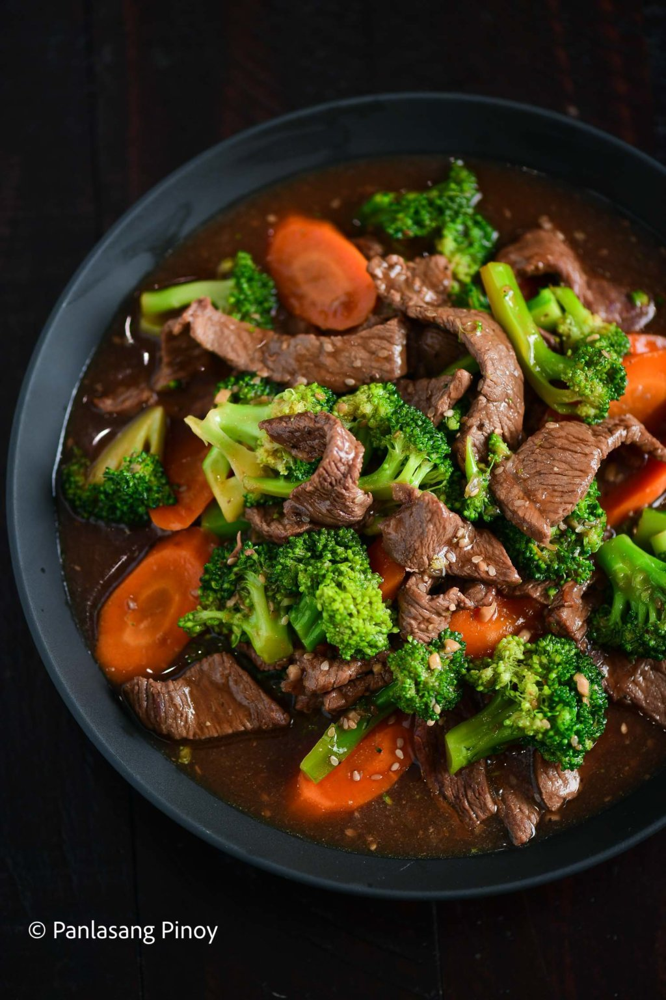

Beef Broccoli with Carrots Recipe

One of the best things about beef broccoli is that it's a one pan
meal. This means, as the name might suggest, you only need the one
pan to cook it! Indeed, all your ingredients in this dish come
together quite quickly. This tasty stir fry will take you half an
hour to make, but the results are definitely worth it. Saucy,
savory, and scrumptious, the smell alone will make cooking this
dish worthwhile!
Most of the time you dedicate to this recipe is spent on your
beef. In this beef broccoli recipe, we're using thin slices of
beef sirloin. The goal is to get our meat so juicy and tender it
practically melts in your mouth. And like all good things, this
takes time. You'll notice, then, that 25 minutes of this recipe
— about 80% of the actual prep time — goes into ensuring your beef
is cooking low and slow. Low and slow is always key for cooking
any kind of meat, in order to ensure you get the tender texture
you desire.
Ingredients
- 1 1/2 lbs beef sirloin thinly sliced
- 1 Knorr Beef Cube
- 1 cup broccoli floret
- 2 carrots sliced
- 3 tablespoons soy sauce
- 2 tablespoons oyster sauce
- 1 teaspoon sesame oil
- 2 teaspoons brown sugar
- 2 tablespoons cornstarch
- 1 1/2 cups water
- 1 onion chopped
- 1 tablespoon garlic minced
- 3 tablespoons toasted sesame seeds
- Salt and ground black pepper to taste
Instructions
- Heat oil in a pan. Saute onion and garlic
- Add beef once the onion softens. Continue cooking until the
beef turns light brown
- Pour the soy sauce into the pan along with the oyster sauce
and sesame oil. Stir
- Add Knorr Beef Cube. Pour water into the pan. Cover and then
cook in low heat for 25 minutes
- Add brown sugar, carrots, and broccoli. Cover the pan and
continue cooking for 5 minutes
- Combine cornstarch with 3 tablespoons water. Mix well. Pour
the mixture into the pan. Stir and cook until the sauce
thickens to your desired consistency
- Season with salt and ground black pepper
- Finish by adding toasted sesame seeds
- Serve over rice. Share and Enjoy!